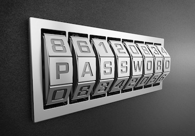

Under ämnet schysst gav jag er en inblick i hur man bör bete sig på webben.
Ett ord som de flesta av oss känner igen är hacker, ni som inte vet vad en hacker är har en förklaring här ”En hacker är någon som använder fel och förbiseenden i en dators säkerhetssystem för att bryta sig in i en annan maskin”.
Det finns alltså folk idag som kan komma in på din dator och webbplatser. Utnyttja ditt namn och utge information som du personligen inte står för, därför är det viktigt att du använder ett så säkert lösenord som möjligt.
Nyckeln till ett säkert lösenord är längd och komplexitet.
Här är några tips hur du kan tänka när du ska välja lösenord:
Om du är osäker på ditt lösenords styrka kan du testa det här http://testalosenord.se.
